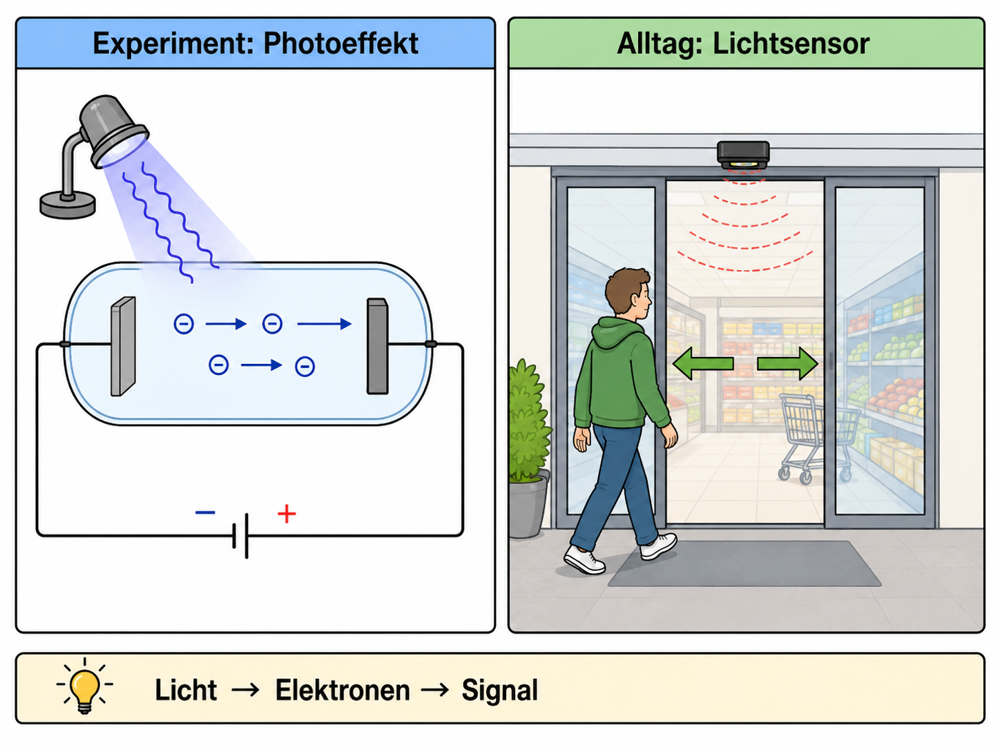

Photoeffekt und Lichtquanten
Warum löst helleres rotes Licht keine Elektronen aus, kurzwelliges Licht aber schon?

1Leitfrage, Vorwissen und Vernetzung
Leitfrage: Warum löst helleres rotes Licht keine Elektronen aus, kurzwelliges Licht aber schon?
Das brauchst du vorher
Das wird später wichtig
Zielkompetenzen
- Quantencharakter des Lichts experimentell begründen.
- \(E=h f\), \(c=\lambda f\) und die Einstein-Gleichung \(E_\text{kin,max}=h f-W_A\) anwenden.
- Aus Messdaten Grenzfrequenz, Austrittsarbeit und Planck-Konstante bestimmen.
2Lokale Simulation: vorhersagen – beobachten – erklären
Diese Simulation läuft lokal im Lernpfad. Verändere zunächst nur eine Größe und notiere, was sich ändert.
3Ergänzende Simulationen und Materialien
Externe Simulationen werden als Buttons geöffnet. Auf dem iPad funktioniert das stabiler als ein eingebettetes Fremdfenster.
Arbeite nach dem Muster: vorhersagen - beobachten - erklären.
LEIFI: Quantenobjekt Photon – VersucheArbeite nach dem Muster: vorhersagen - beobachten - erklären.
PhET: Photoelectric EffectMetall, Frequenz und Intensität variieren; notieren, wann Elektronen austreten und wie sich \(E_\text{kin,max}\) ändert.
LEIFI: Planck-Konstante mit LED – AufgabeMaterialgebundene Übungsaufgabe zur Auswertung einer LED-Messung.
FU Berlin PhysLab: Photoeffekt Online-KursAls betreutes Online-Experiment oder Datenquelle für eine authentische Auswertung nutzen.
Lokale Simulation im LernpfadFrequenz und Intensität ohne externen Dienst variieren.
4Experimente mit Durchführung, Auswertung und Protokoll
Wähle je nach Ausstattung einen Realversuch, eine Demo, eine Simulation oder eine Datenauswertung. Beobachtung und Deutung werden getrennt protokolliert.
1. Hallwachs-Versuch mit Strommesser: Frequenz statt HelligkeitDemoversuch
Material
Zinkplatte oder Photozelle, UV-Lampe, sichtbare Lichtquelle, Filter, Elektrometer oder Strommesser.
Durchführung
Nacheinander sichtbares Licht und UV-Licht auf die negativ geladene Platte richten. Intensität und Frequenz werden getrennt variiert.
Auswertung
Auswertung: Nur Photonen oberhalb der Grenzfrequenz lösen Elektronen aus. Größere Intensität erhöht vor allem die Anzahl ausgelöster Elektronen, nicht deren maximale Energie.
Protokoll
Protokollspalten: Lichtart, Filter, Intensität, Ausschlag/Strom, Folgerung.
Quelle/Anregung: LEIFI-Physik: Versuche von Hallwachs mit dem Strommesser
2. Bestimmung von \(h\) mit LEDsSchülerversuch / Ausgleichsgerade
Material
LEDs verschiedener Farben, Vorwiderstand, Spannungsquelle, zwei Multimeter, Wellenlängenangaben.
Durchführung
Für jede LED wird die Schwellspannung bestimmt. Anschließend wird \(f=c/\lambda\) berechnet und \(U_\mathrm{S}\) gegen \(f\) dargestellt.
Auswertung
Aus der Steigung folgt näherungsweise \(h/e\), also \(h=e\cdot m\). Die Lernenden diskutieren, warum die LED-Methode systematisch ungenauer ist als die Gegenfeldmethode.
Protokoll
Tabelle plus Diagramm mit Ausgleichsgerade, Steigung, berechnetem \(h\) und Fehlerquellen.
Quelle/Anregung: LEIFI-Physik: h-Bestimmung mit LEDs
3. Photoeffekt als Online-ExperimentOnline-Experiment / Datenanalyse
Material
iPad, Online-Kurs oder bereitgestellte Messdaten.
Durchführung
Messwerte zu Gegenspannung und Frequenz auswerten; alternativ in der PhET-Simulation Messreihen erzeugen.
Auswertung
Linearisierung: \(eU_g=h f-W_A\). Die Steigung im \(U_g(f)\)-Diagramm liefert \(h/e\), der Achsenabschnitt liefert \(-W_A/e\).
Protokoll
Vollständiges Auswertungsprotokoll mit Achsenwahl, Gerade, Steigung, Grenzfrequenz, Austrittsarbeit.
Quelle/Anregung: FU Berlin PhysLab: Online-Kurse Photoeffekt
4. Gegenfeldmethode mit vorbereiteten MessdatenErgänzender Versuch / Auswertung
Material
Messwertblatt mit Frequenz, Gegenspannung und Metallsorte; GeoGebra/Tabellenfunktion optional.
Durchführung
Lernende tragen \(U_g\) gegen \(f\) auf und bestimmen Steigung und Achsenabschnitt.
Auswertung
Steigung liefert \(h/e\), Achsenabschnitt liefert \(-W_A/e\).
Protokoll
Protokolliere Fragestellung, Vermutung, Durchführung, Beobachtung, Auswertung, Fehlerquellen und einen Ergebnissatz.
Quelle/Anregung: Ergänzung für Q2-GK-Lernpfad, angelehnt an LEIFI/PhET/FU-Berlin/Leybold-Kontexte
Digitales Protokoll
5Interaktive Messdaten- und Diagrammauswertung
Lies Achsen und Einheiten genau. Nutze den Graphen als Material, wie es in Klausuren häufig vorkommt.
6Formelarbeit und adaptive Hilfe
Formel umstellen
1. Gesuchte Größe markieren. 2. Formel symbolisch umstellen. 3. Einheiten umrechnen. 4. Zahlen einsetzen. 5. Ergebnis mit Einheit deuten.
Einheitenanker
\(1\,\mathrm{nm}=10^{-9}\,\mathrm{m}\), \(1\,\mathrm{pm}=10^{-12}\,\mathrm{m}\), \(1\,\mathrm{eV}=1{,}602\cdot10^{-19}\,\mathrm{J}\), \(1\,\mathrm{kV}=1000\,\mathrm{V}\).
7Problematisch falsche Aussage korrigieren
Problematisch falsche Aussage: Wenn man die Lampe heller macht, werden die ausgelösten Elektronen automatisch schneller.
Aufgabe: Markiere gedanklich den problematischen Teil. Korrigiere die Aussage so, dass sie fachlich präzise und für Q2-Grundkurs verständlich ist.
8Klausur- und Prüfungstraining
Prüfungstraining mit Material
Material: Eine Photozelle wird mit drei Lichtfrequenzen beleuchtet. Die Gegenspannungen betragen 0,20 V, 0,41 V und 0,62 V.
- Beschreiben Sie die Messidee der Gegenfeldmethode.
- Werten Sie aus, warum eine Gerade in einem \(U_g(f)\)-Diagramm erwartet wird.
- Beurteilen Sie die Aussage, eine hellere Lampe vergrößere immer die maximale Elektronenenergie.
Musterlösung gestuft anzeigen
Aus \(eU_g=hf-W_A\) folgt eine Gerade. Helligkeit/Intensität verändert vor allem die Anzahl der Photonen, nicht die Energie pro Photon.
Operatorencheck
- Beschreiben: Was ist sichtbar oder gegeben?
- Auswerten: Welche Größe wird aus Daten, Diagramm oder Formel gewonnen?
- Erklären: Welches Modell begründet den Befund?
- Beurteilen: Welche Aussage ist tragfähig, welche Grenze muss genannt werden?
9Sichern, vernetzen und KI-Diagnose
Schreibe eine Drei-Satz-Sicherung: 1. zentraler Befund, 2. passende Formel/Modellidee, 3. typische Fehlerquelle.